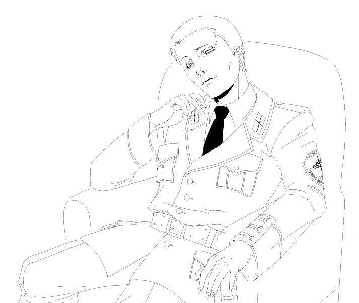
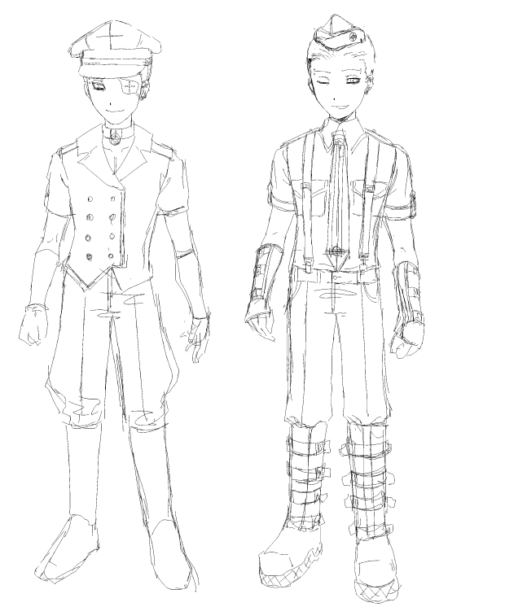
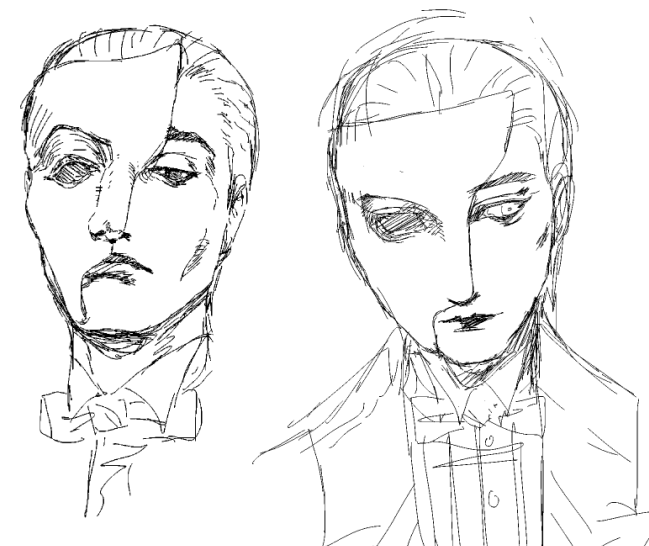
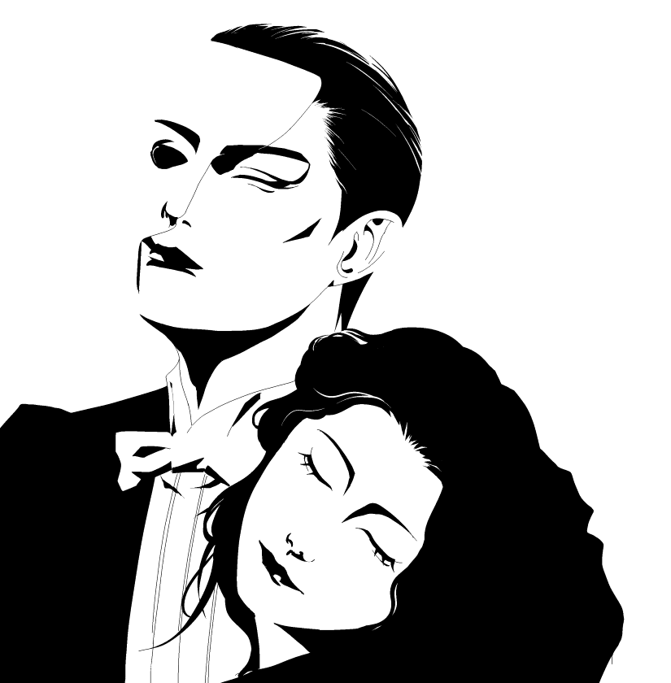
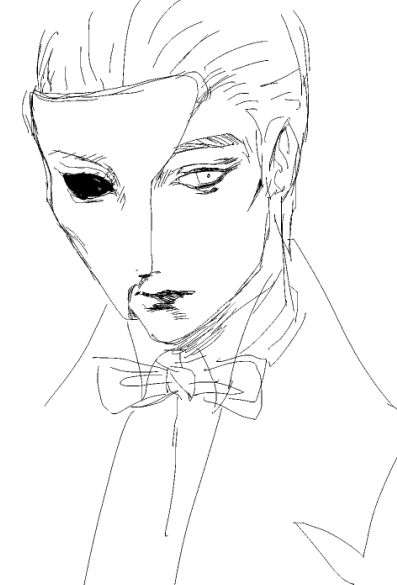
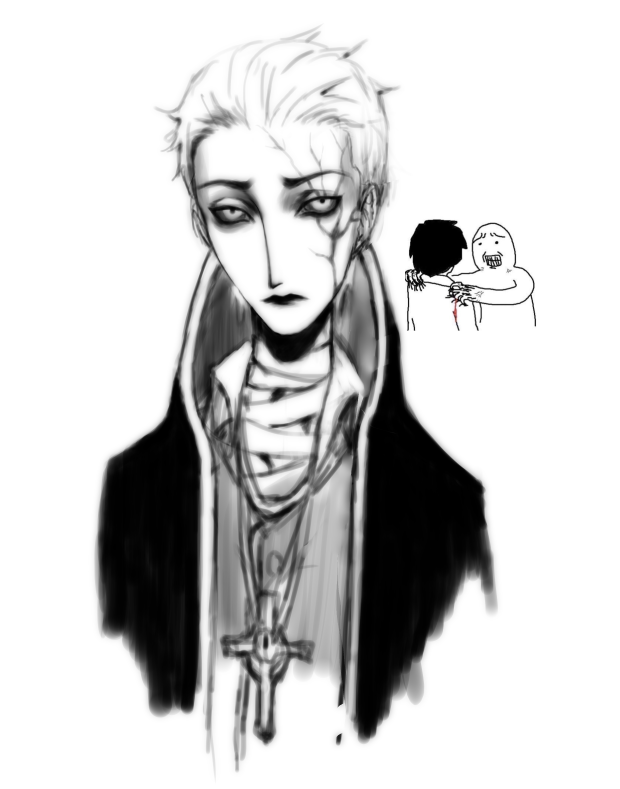
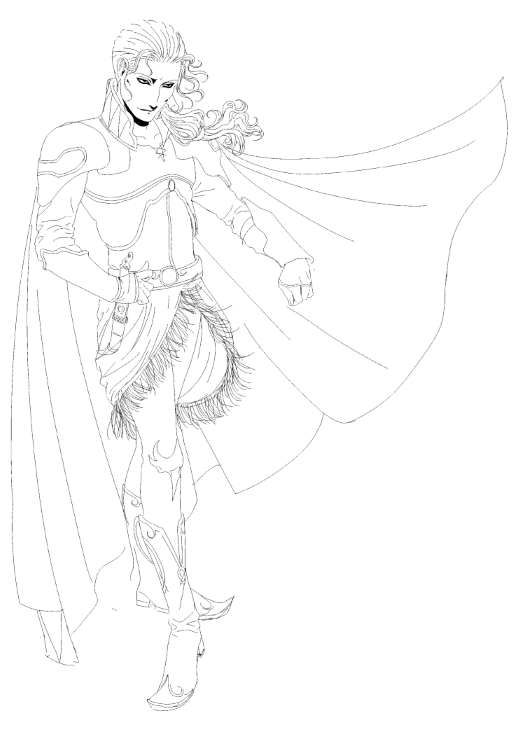
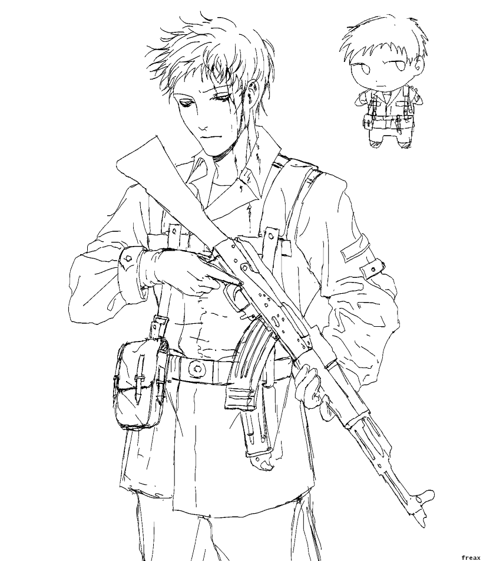
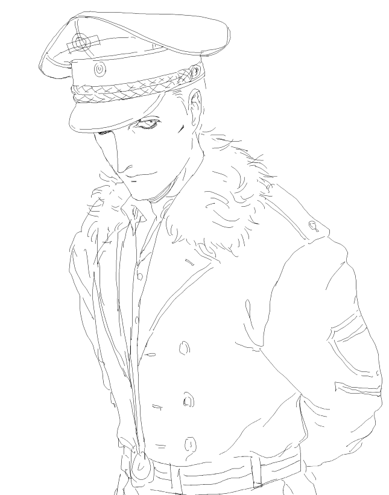

Random Håkan doodle. When I draw him I usually get too lazy to draw his shoulder cord or shoulderboards -_-. Designed some more outfits for him for fun, which are loosely based off some of his concept sketches. At some point I'll work on an archive page with my old drawings and OC sketches. In unrelated news, we watched Swordsman (1990) and the really shitty Winnie the Pooh movie from 2023.

Ramin Phantom and a random 30 sec scribble Phantom... We watched the Hungarian non-replica version today! I have to say that I quite like the set design.... Though, can't say if I'm a fan of the new choreography in certain parts like MOTN and the ending. I do like the changes they made to the ballet choreography a lot though! Then we made a list of 51 movies to watch over break... including every iteration of The Phantom Of The Opera!!! (except the Dario Argento one LOL).

GaPhantom and Xiunism as Christine... I want to draw a whole page of my favorite moments from this production but it's finals week... Look at my mipys... Since I update this log a bit more, I might use it to microblog. Basically, I rewatched the play and the movie again with my friend. And then I rewatched the play AGAIN with my other friend. And then I did my German speaking project on POTO. THIS PHANTOM OF THE OPERA SHIT GETS SERIOUS!!! This week we're planning to watch the horrible sequel "Love Never Dies" and then the Hungarian non-replica production B). MY PROPAGANDA IS WORKING!

Stupidly quick Phantom sketch. I've been awake for 17 hours and I have to go to uni now...

Playing IDV after 2 years because I saw Alva's new Pastoral Priest skin. I feel very normal about him. I don't even like playing hunter... Take a looksy at my boy.

Randomly thought about FF6 so doodled Edgar. His pose looks weird because I was going to draw his sword but I don't feel like finishing this anymore.

This is actually old and I thought I uploaded it but I guess I didn't... Håkan again.

More Håkan. He's supposed to have a day collar and doesn't wear a shirt underneath his wintermantel (I tried to make this outfit resemble his first "finalized" design) but unfortunately he will not be hoeing out in this sketch... (20250302)